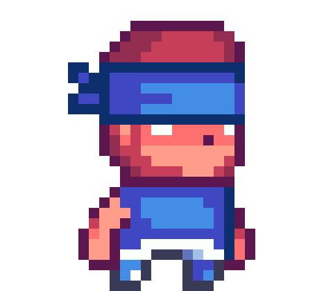

| Victorias | Muertes | Kills | % Victorias |
|---|
Instrucciones Capture The Flag
Objetivo
El objetivo del juego consiste en obtener la mayor cantidad de puntos durante el transcurso de la partida, para obtener puntos se debe tomar la bandera y cada segundo se sumara un punto al score. Cada jugador cuenta con 100 puntos de vida inicialmente, y cuenta con un poder que disminuye 20 puntos de vida cuando impacta a otro jugador.Controles
Salto: wMover izquierda: a
Mover derecha: d
Disparo: p
Interfaz del juego
Ventana de estadisticas
En esta ventana se muestran todos los datos recoletados de las partidas del jugador, como victorias, derrotas, kills, muertes etc. Tambien nos brinda informacion sobre el desemepeno del jugador en general, dandonos un porcentaje de victorias sobre el total de muertes.
Ventana de salas
En esta ventana se muestran las salas disponibles a las que el jugador se puede unir.
Ventana de crear

En esta ventana el jugador puede crear una partida, elegiendo el mapa que considere.
Finalmente, se debe elegir un skin o se tendra el color verde por defecto para nuestro personaje